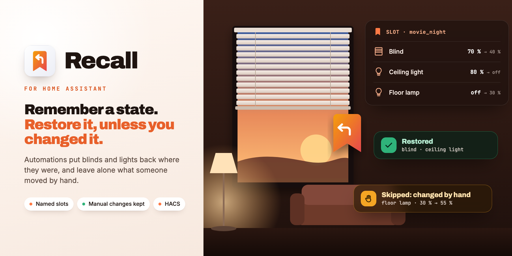

For Home AssistantFür Home Assistant
Many automations change something for a while and put it back afterwards: lights for a movie, blinds for the sun, the thermostat while a window is open, the speaker volume for an announcement. Recall does that and notices when someone took over: what was moved by hand stays where it is. Named slots, survives restarts, a modern replacement for Saver.Viele Automationen verstellen etwas für eine Weile und stellen es danach zurück: Licht für den Film, Jalousien gegen die Sonne, das Thermostat bei offenem Fenster, die Lautstärke für eine Durchsage. Recall macht das und merkt, wenn jemand übernommen hat: Was von Hand verstellt wurde, bleibt, wo es ist. Benannte Slots, übersteht Neustarts, ein moderner Ersatz für Saver.

What it doesWas es kann
Three actions, one condition, one sensor. No helpers, no templates.Drei Aktionen, eine Bedingung, ein Sensor. Keine Helfer, keine Templates.
Recall learns the state the automation ends up in. Dimmed the light, moved the blind or turned up the heating since? recall.restore leaves it alone.Recall lernt, wo die Automation das Gerät hingestellt hat. Seitdem selbst verstellt? recall.restore lässt es in Ruhe.
Two automations on the same device no longer overwrite each other, and slots hand over to each other in any order.Zwei Automationen am selben Gerät überschreiben sich nicht mehr, Slots übergeben in jeder Reihenfolge.
Stored in .storage/recall.snapshots, not in the attributes of an entity.Gespeichert in .storage/recall.snapshots, nicht in Attributen einer Entität.
Home Assistant's own reproduce_state: position and tilt, brightness and colour, climate targets. Optional light transition.Mit Home Assistants eigenem reproduce_state: Position und Lamellen, Helligkeit und Farbe, Klima-Sollwerte. Optional mit Überblendung.
expires_after forgets a remembered state that was never restored, per action or as a default.expires_after vergisst einen Zustand, der nie zurückgestellt wurde, je Aktion oder als Vorgabe.
Every action returns what it did: restored, or skipped with a reason. Events for everything, plus the condition recall.is_saved.Jede Aktion sagt, was sie getan hat: zurückgestellt oder übersprungen mit Grund. Ereignisse für alles, dazu die Bedingung recall.is_saved.
How it worksSo funktioniert es
Right after recall.save the automation moves the device. Every change by that run restarts a 15 second quiet window; the calm state at the end is what the automation wanted. A later change by someone else counts as manual.Direkt nach recall.save fährt die Automation das Gerät. Jede Änderung dieses Laufs startet ein Ruhefenster von 15 Sekunden neu; der ruhige Zustand am Ende ist, was die Automation wollte. Eine spätere Änderung von jemand anderem zählt als Handeingriff.
| Saver | Recall | |
|---|---|---|
| Save and restoreMerken und zurückstellen | saver.save_state / restore_statesaver.save_state / restore_state | recall.save / recall.restore with a slotrecall.save / recall.restore mit Slot |
| Manual change sinceInzwischen von Hand verstellt | Restored anyway, or a helper per automationTrotzdem zurück, oder ein Helfer je Automation | Left alone, with the reason in the answerBleibt, mit Grund in der Antwort |
| Two automations, same deviceZwei Automationen, ein Gerät | Overwrite each otherÜberschreiben sich | Own slots, handed over in any orderEigene Slots, Übergabe in jeder Reihenfolge |
| VariablesVariablen | saver.set_variablesaver.set_variable | Not part of Recall, use a helperNicht in Recall, dafür ein Helfer |
InstallInstallation
As a custom repository.Als benutzerdefiniertes Repository.
https://github.com/SH1FT-W/recallDefault settings and remembered states are under Configure.Standardeinstellungen und gemerkte Zustände findest du unter Konfigurieren.
No account, no YAML.Kein Konto, kein YAML.
While Saver is still set up, Recall shows a repair notice as a reminder. States remembered by Saver are not taken over.Solange Saver eingerichtet ist, erinnert Recall mit einem Reparatur-Hinweis. Von Saver gemerkte Zustände werden nicht übernommen.
Download the latest release, copy its custom_components/recall folder into /config/custom_components/, restart Home Assistant and add the integration.Lade das neueste Release herunter, kopiere den Ordner custom_components/recall nach /config/custom_components/, starte Home Assistant neu und füge die Integration hinzu.
Good to knowGut zu wissen
Anything Home Assistant can restore with reproduce_state: covers, lights, climate, fans, media players, humidifiers and more. Used every day with lights and blinds; the other domains are covered by the automated tests.Alles, was Home Assistant mit reproduce_state zurückstellen kann: Jalousien, Lichter, Klima, Lüfter, Medienplayer, Luftbefeuchter und mehr. Täglich im Einsatz mit Lichtern und Jalousien; die übrigen Domänen prüfen die automatischen Tests.
Look at detail in the answer or the recall_skipped event, for example current_position: 40 → 45, and raise the tolerance.Schau in detail der Antwort oder ins Ereignis recall_skipped, zum Beispiel current_position: 40 → 45, und erhöhe die Toleranz.
A change in the first seconds after recall.save, before the device is calm, is taken as the automation's target. Changes in the Home Assistant UI or by other automations are recognised at any time.Eine Änderung in den ersten Sekunden nach recall.save, bevor das Gerät ruhig ist, gilt als Ziel der Automation. Änderungen in der Oberfläche oder durch andere Automationen erkennt Recall jederzeit.
Swap the actions as shown in the README and drop the helper booleans. Switch at a moment nothing is waiting to be restored.Aktionen tauschen wie in der README gezeigt und die Hilfs-Booleans weglassen. Am besten umstellen, wenn gerade nichts auf Zurückstellen wartet.
Open a GitHub issue with the diagnostics or debug log lines.Ein GitHub-Issue mit der Diagnose oder Debug-Logzeilen öffnen.
Recall
Three actions, named slots, no helpers.Drei Aktionen, benannte Slots, keine Helfer.